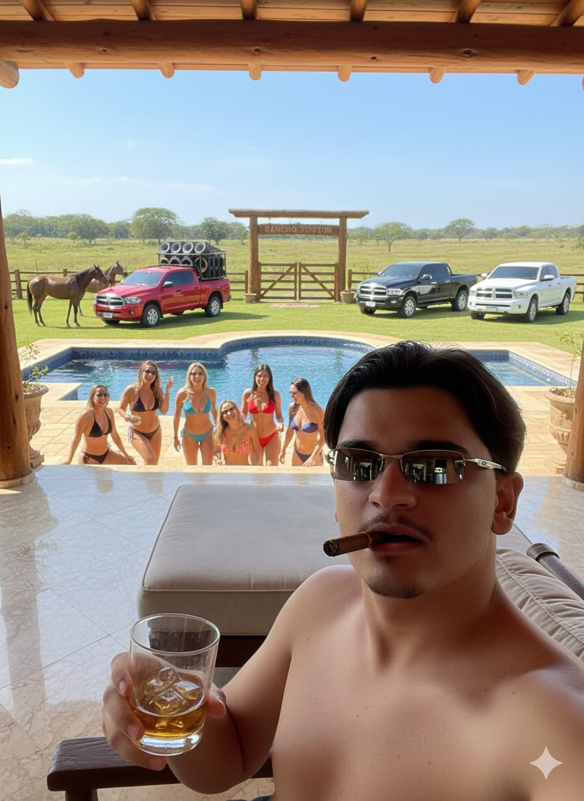
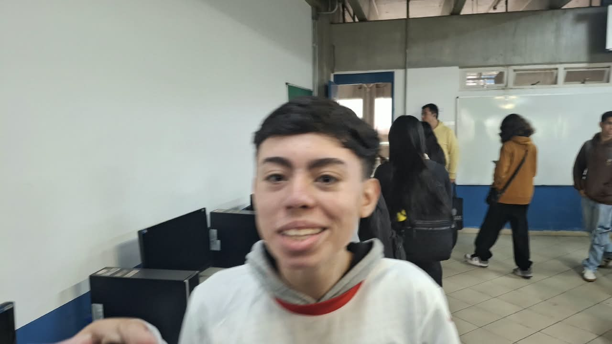
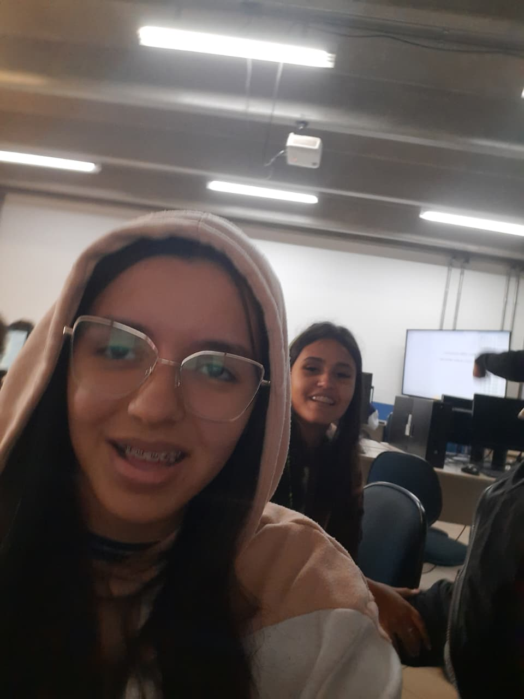
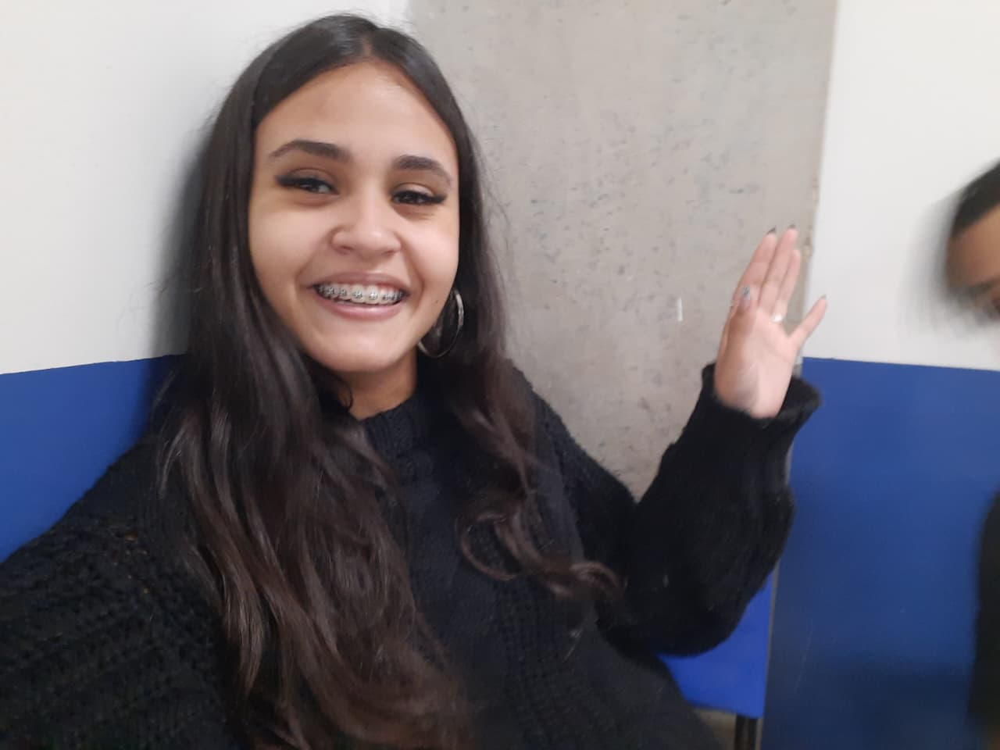

Curso Técnico em Desenvolvimento de Sistemas · Etec Paulistano · Centro Paula Souza · 2025 - 2027
Kaizen
Um sistema que ajuda equipes a melhorar um pouco todos os dias.
Tudo começou com uma folha do caderno do Bruno e uma imaginação do mesmo e do I.Maiolo
Sobre o projeto
O tema. Kaizen é uma palavra japonesa que significa “mudar para melhor”. Na prática, é a ideia de que pequenos ajustes constantes valem mais do que grandes reformas raras. Levamos essa ideia para o nosso curso: como o software pode ajudar um grupo a enxergar o que precisa melhorar?
O problema. Ainda não identificado completamente, tivemos alguns casos a serem analisados e estudados porem nao demos sequencia.
O objetivo. Como não sabemos ao certo o que queremos, vamos tentar construir algo que possa ajudar as equipes a identificar e implementar melhorias de forma contínua.
Equipe
-

Isaac Maiolo
Full Stack Da Parada
Doce, Carinhoso, Resistente, Envolvente, Atencioso, Marrento, Posso falar?
-
Bruno Pereira
Jerenti Di Buzinis Naverdatchi
Cafajeste, chucro, sempre louco e embrazado?
-

Guilherme Rhowsemberg
Menino Dos Dados (7)
O 7 Patrocina Não Precisa De Arrasta Pra Cima
-

Jaquelyne Freitas
Controle De Informação (fofoca)
Galinha Escrota?
-

Sarah Giovanna
Criadora do gmail
Está Em Debate...
Como trabalhamos
-
Conversa e pesquisa
06/2026
Entrevistas, leitura e a escolha do problema que valia o semestre.
-
Desenho da solução
07/2027
Esboços em papel, modelagem do banco de dados e protótipos das telas.
-
Construção
07/2026 - 12/2027
Desenvolvimento em ciclos curtos, com revisão do grupo a cada entrega.
-
Testes com pessoas reais
em análise
Uso do sistema por quem enfrenta o problema, e ajustes a partir do que for observado.
-
Escrita final e apresentação
12/2027
Fechamento da documentação e defesa diante da banca.
O que esperamos entregar
- Um sistema funcionando, com o essencial resolvido e bem testado.
- A documentação completa, para que outra turma consiga continuar de onde paramos.
- Um relato honesto do que deu certo, do que mudamos no caminho e do que ficou para depois.
esperamos que esse projeto faça com que parem de chutar a bola na mavie
Agradecimentos
Ao Josinaldo e o Allan, ambos gente boa. À Etec Paulistano e aos professores do curso, que nos deram o chão para construir. E às pessoas que aceitaram testar o projeto e nos disseram, sem rodeios, o que não funcionava.